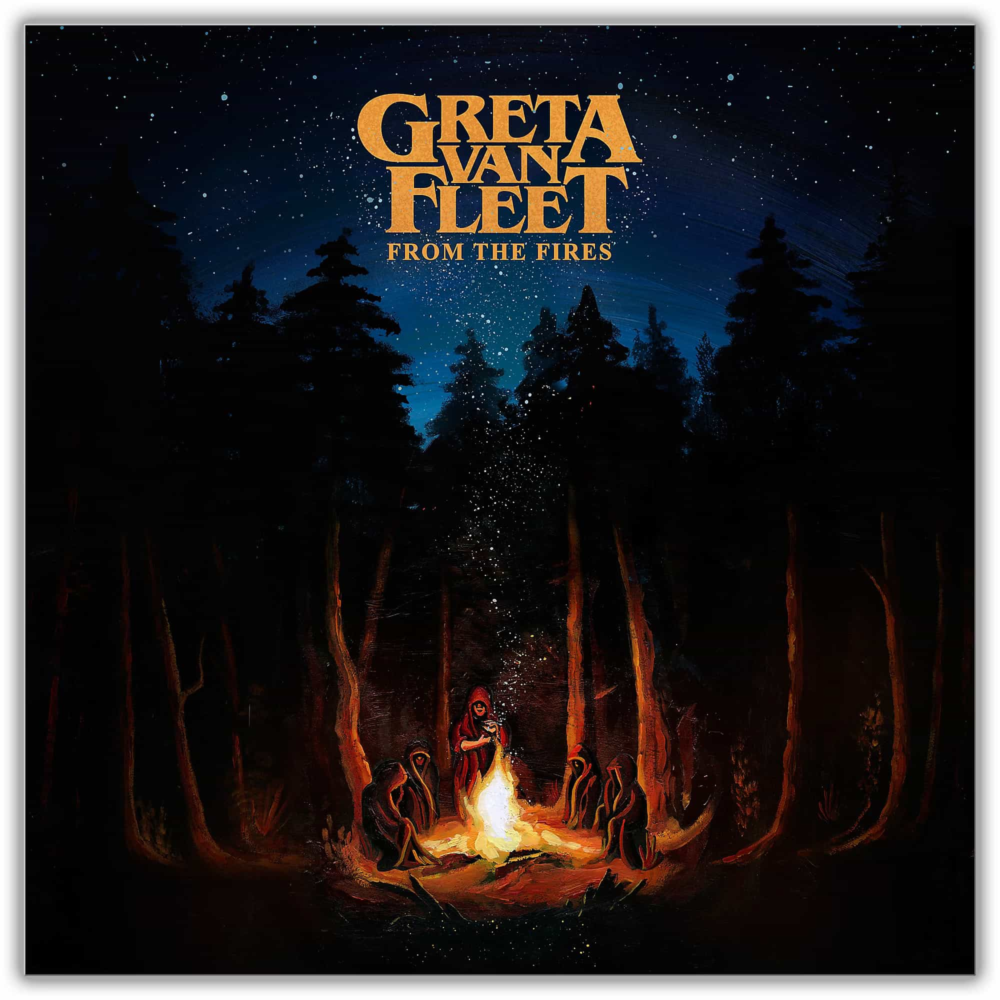

From the Fires
~ Greta Van Fleet ~
The first Greta Van Fleet song I ever heard was “Black Smoke Rising” off this EP. Josh Kizska’s vocals instantly entrapped me, like Robert Plant but with a grit and intonation unique to Kizska. This album released on November 10 (my birthday) of 2017. My favorite songs off this EP include “Flower Power,” “Talk on the Street,” and “Edge of Darkness,” all of which I learned to play on guitar in high school. I also love the cover of “Change is Gonna Come.”